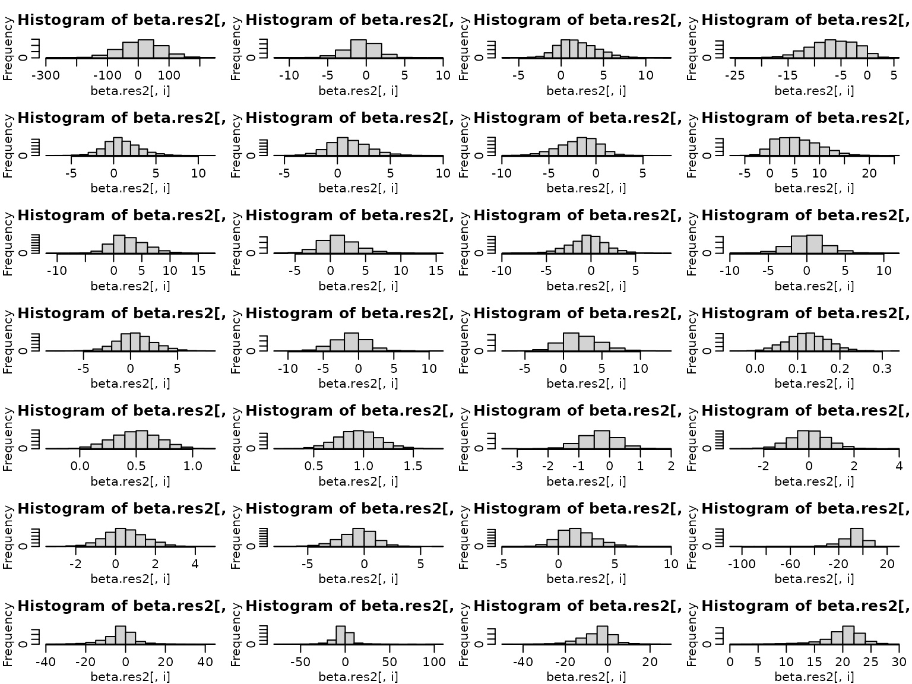
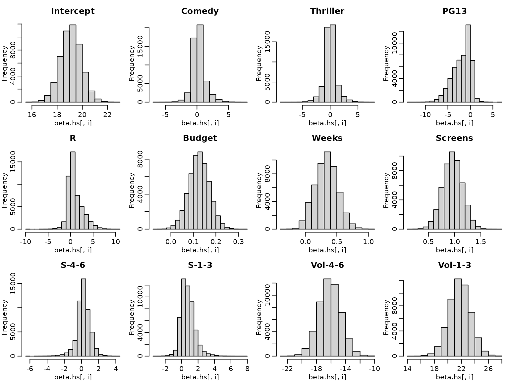

Chapter 6
Chapter06.RmdMovie data
We use movie data provided as “movies.rda” to illustrate Bayesian analysis of a regression model. The data set is a preprocessed version of the one provided by Lehrer and Xi (2017). First of all, as there is only one film of genre G, we set the baseline for the categorical covariate genre to G or PG by removing PG from the data set.
library("BayesianLearningCode")
data("movies", package = "BayesianLearningCode")
movies["PG"] <- NULLNext we prepare the variables for regression analysis. We define the response variable OpenBoxOffice as y and center the covariates at zero.
y<- movies[, "OpenBoxOffice"]
data.cen <- movies[,-1]
vbin<- c("Action","Adventure","Animation","Comedy","Crime",
"Drama", "Family","Fantasy", "Mystery", "Romance",
"Sci-Fi", "Thriller", "PG13", "R")
data.cen[,vbin]<-scale(movies[,vbin],scale=FALSE)
vmetr<- c("Budget", "Weeks", "Screens",
"S-21-27","S-14-20","S-7-13","S-4-6","S-1-3",
"Vol-21-27","Vol-14-20","Vol-7-13","Vol-4-6",
"Vol-1-3")
data.cen[,vmetr]<-scale(movies[,vmetr],scale=FALSE)
N=length(y) # number of Observations
X=cbind(rep(1,N),as.matrix(data.cen)) # Regressor matrix
d=dim(X)[2]-1 # regression effects except the interceptWe first estimate the parameters of the regression model under a rather flat semi-conjugate prior.
# define prior parameters
B0.inv=diag(c(1/10000,rep(1/100,d)), nrow=d+1)
b0=rep(0,d+1)
c0=2.5
C0=1.5
# define quantities for the Gibbs sampler
XX <- crossprod(X)
Xy<- t(X)%*%y
cN=c0+N/2
#define burnin and M
burnin=1000
M=5000
# prepare storing of results
betas=matrix(NA, nrow=burnin+M, ncol=d+1)
sigma2s=rep(NA,burnin+M )
require("mvtnorm")
#> Loading required package: mvtnorm
# starting value for sigma2
sigma2=var(y)/2
for (m in 1:(burnin+M)){
# sample beta from the full conditional
Bn <- solve(B0.inv+XX/sigma2)
bn <- Bn%*%(B0.inv%*%b0+Xy/sigma2)
beta=t(rmvnorm(n=1,mean=bn,sigma=Bn))
# sample sigma^2 from its full conditional
eps<-y-X%*%beta
CN<-C0+ crossprod(eps)/2
sigma2<-rinvgamma(1,cN,CN)
betas[m,]<-beta
sigma2s[m]<- sigma2
}To summarize the results nicely we compute equal tailed 95% confidence intervals.
eq.tails<-function(x)c(quantile(x,0.025), quantile(x,0.975))
beta.res1<- betas[burnin+(1:M),]
beta.eq1<-t(apply(beta.res1,2,eq.tails))
res1 <- cbind(colMeans(beta.res1), beta.eq1)
rownames(res1) <- c("Intercept", colnames(data.cen))
colnames(res1) <- c("post.mean", "2.5%", "97.5" )
print(round(res1,3))
#> post.mean 2.5% 97.5
#> Intercept 19.109 17.500 20.650
#> Action -1.690 -6.663 3.442
#> Adventure 3.855 -1.314 8.854
#> Animation -9.893 -17.349 -2.470
#> Comedy 1.978 -3.288 7.251
#> Crime 2.182 -2.318 6.687
#> Drama -2.657 -7.718 2.552
#> Family 9.518 1.645 17.325
#> Fantasy 4.924 -1.918 11.785
#> Mystery 2.598 -3.674 8.790
#> Romance -0.180 -5.941 5.008
#> Sci-Fi -0.005 -6.052 6.295
#> Thriller 1.185 -3.971 6.475
#> PG13 -0.069 -6.372 6.167
#> R 3.885 -2.523 10.279
#> Budget 0.119 0.021 0.216
#> Weeks 0.547 0.156 0.933
#> Screens 0.931 0.525 1.330
#> S-21-27 -0.422 -1.667 0.760
#> S-14-20 0.056 -1.800 1.910
#> S-7-13 0.483 -2.392 3.387
#> S-4-6 -1.501 -5.193 2.194
#> S-1-3 2.695 -1.237 6.450
#> Vol-21-27 -7.500 -23.644 8.529
#> Vol-14-20 -0.764 -17.584 15.673
#> Vol-7-13 -4.518 -21.705 12.399
#> Vol-4-6 -5.716 -21.147 8.860
#> Vol-1-3 20.997 17.173 24.841
sigma2.res1<- sigma2s[burnin+(1:M)]
print(round(c(mean(sigma2.res1), eq.tails(sigma2.res1)),3))
#> 2.5% 97.5%
#> 60.375 43.676 83.717Next we use the horseshoe prior to analyse the data. We use the same prior on the intercept but specify the horseshoe prior via latent Inverse Gamma parameters.
B0inv.intcpt=1/10000
b0=rep(0,d+1)
c0=2.5
C0=1.5
# define quantities for the Gibbs sampler
XX <- crossprod(X)
Xy<- t(X)%*%y
cN=c0+N/2
#define burnin and M
burnin=1000
M=5000
# prepare storing of results
betas=matrix(NA, nrow=burnin+M, ncol=d+1)
lambda2s=rep(NA, burnin+M)
nus=rep(NA, burnin+M)
tau2s=matrix(NA, nrow=burnin+M, ncol=d)
xis=matrix(NA, nrow=burnin+M, ncol=d)
sigma2s=rep(NA,burnin+M)
# starting value for sigma2
sigma2=var(y)/2
lambda2<- 1
xi<-1
tau2<-rep(1,d)
nu<- rep(1,d)
for (m in 1:(burnin+M)){
# sample beta from the full conditional
B0.inv=diag(c(B0inv.intcpt, 1/(lambda2*tau2)))
Bn <- solve(B0.inv+XX/sigma2)
bn <- Bn%*%(B0.inv%*%b0+Xy/sigma2)
beta=t(rmvnorm(n=1,mean=bn,sigma=Bn))
# sample lambda2 and nu
lambda2=rinvgamma(1,d/2,
1/xi+sum(beta[-1]^2/(2*lambda2)))
nu=rinvgamma(1,1,1+1/lambda2)
#sample tau2 and xi
tau2 <- rinvgamma(d,1,
1/nu+(beta[-1]^2)/(2*tau2))
xi <- rinvgamma(d,1,1+1/tau2)
# sample sigma^2 from its full conditional
eps <- y-X%*%beta
CN <- C0+ crossprod(eps)/2
sigma2 <- rinvgamma(1,cN,CN)
# Save the draws
betas[m,]<-beta
lambda2s[m] <- lambda2
nus[m]<- nu
tau2s[m,]<- tau2
xis[m,] <- xi
sigma2s[m]<- sigma2
}Again we compose a table with posterior mean estimates and equal tailed 95% credibility intervals
beta.res2<- betas[burnin+(1:M),]
beta.eq2<-t(apply(beta.res2,2,eq.tails))
res2 <- cbind(colMeans(beta.res2), beta.eq2)
rownames(res2) <- c("Intercept", colnames(data.cen))
colnames(res2) <- c("post.mean", "2.5%", "97.5" )
print(round(res2,3))
#> post.mean 2.5% 97.5
#> Intercept 19.118 17.566 20.682
#> Action -0.608 -5.157 3.241
#> Adventure 1.988 -1.995 7.020
#> Animation -6.541 -15.589 0.639
#> Comedy 0.967 -2.957 5.490
#> Crime 1.117 -2.320 5.183
#> Drama -1.798 -6.344 1.819
#> Family 5.619 -1.184 14.902
#> Fantasy 2.735 -2.515 9.486
#> Mystery 1.246 -3.443 7.105
#> Romance -0.340 -4.756 3.900
#> Sci-Fi 0.161 -4.891 5.384
#> Thriller 0.515 -3.366 4.752
#> PG13 -1.157 -5.906 3.652
#> R 2.244 -2.043 7.532
#> Budget 0.124 0.031 0.218
#> Weeks 0.498 0.098 0.898
#> Screens 0.950 0.551 1.381
#> S-21-27 -0.336 -1.425 0.734
#> S-14-20 0.003 -1.659 1.652
#> S-7-13 0.441 -2.091 2.993
#> S-4-6 -0.590 -4.034 2.273
#> S-1-3 1.729 -1.209 5.300
#> Vol-21-27 -7.355 -29.362 4.704
#> Vol-14-20 -2.714 -19.453 11.672
#> Vol-7-13 -2.527 -23.094 14.962
#> Vol-4-6 -4.778 -21.352 7.586
#> Vol-1-3 20.087 11.323 25.089
sigma2.res2<- sigma2s[burnin+(1:M)]
print(round(c(mean(sigma2.res2), eq.tails(sigma2.res2)),3))
#> 2.5% 97.5%
#> 62.952 44.696 92.083We next have a look at the posterior distributions: first under the semi-conjugate priors and then under the Horseshoe prior
for (i in 1:(d+1)){
hist(beta.res1[,i])
}
for (i in 1:(d+1)){
hist(beta.res2[,i])
}  Whereas the posterior distributions are symmetric under the semi-conjugate prior this is not the case under the Horseshoe prior.
We next investigate now the MCMC plots.
for (i in 1:(d+1)){
plot(beta.res1[,i], type="l")
}
for (i in 1:(d+1)){
plot(beta.res2[,i], type="l")
}  Finally have a look at boxplots of the posterior distributions of the local shrinkage parameters under the horseshoe prior

The residuals of the model are however not normally distributed.